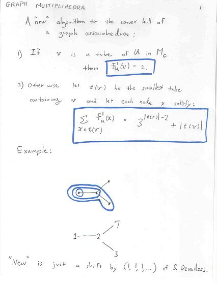
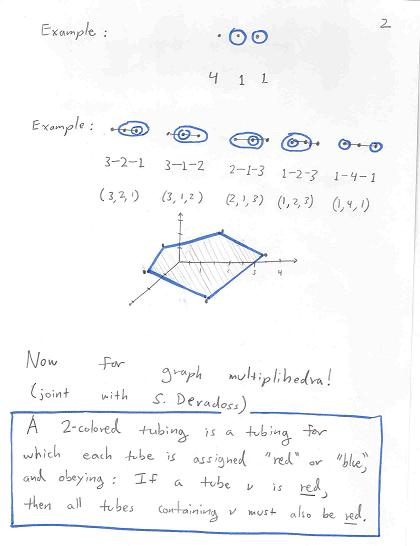
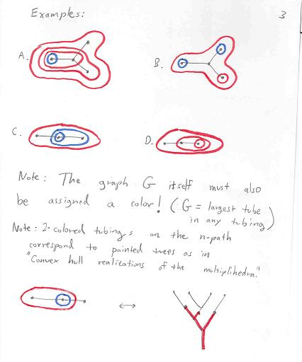
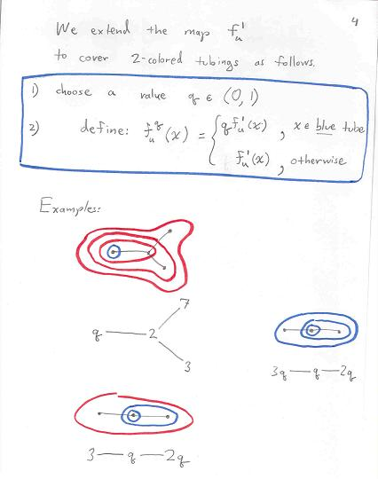
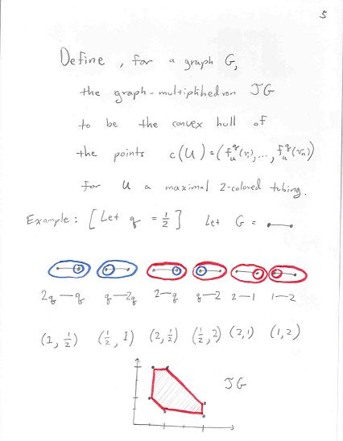
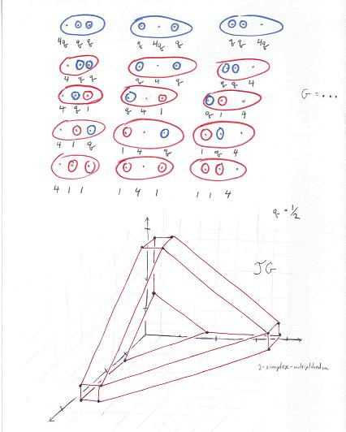
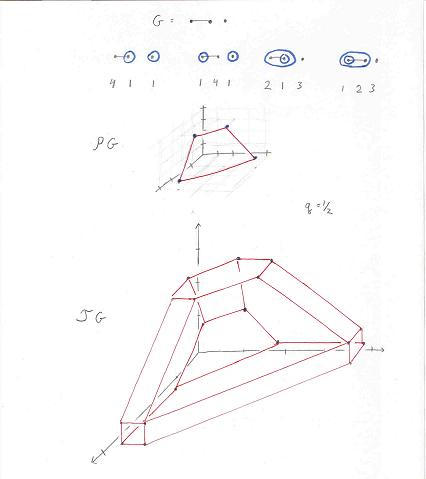
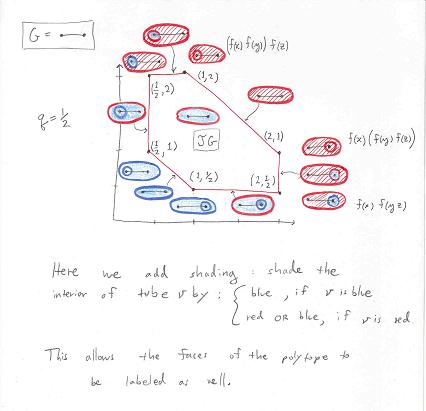

Here are some notes about graph multiplihedra. The two key sources are S. Devadoss's two papers on graph associahedra, and S.Forcey's paper on multiplihedra. In fact, the following notes assume that you have first read and enjoyed the excellent short paper by Devadoss here.



Note that the tubing above is missing its outermost colored tube. Exercise: what color must that outer tube be?





>Also note that the only rule is as follows: If a tube x contains any red at all then x itself must be red.
Revision Date: